01
Датасеты
Собственные наборы инструкций для каждой модели: диалоги, поисковые задачи с источниками и задачи по коду. Скрипты генерации лежат в репозитории.

Masya AgentMasya Agent — это семейство компактных языковых моделей, дообученных на собственных датасетах и размещённых на Hugging Face. Универсальный ИИ, поиск в интернете и генерация кода — в одном чате.
Собственные наборы инструкций для каждой модели: диалоги, поисковые задачи с источниками и задачи по коду. Скрипты генерации лежат в репозитории.
За основу берутся открытые веса Qwen, которые дообучаются методом LoRA на датасетах Masya. Это настоящие трансформеры, генерирующие текст токен за токеном.
Модели работают в бесплатном Hugging Face Space (FastAPI + Transformers). Ответы стримятся на сайт по SSE — ты видишь текст по мере генерации.
Статический сайт без сборки: HTML, CSS и JS. Хостится бесплатно на Firebase Hosting и общается со Space через один настраиваемый URL.
Модели Masya могут ошибаться. Проверяй важную информацию.